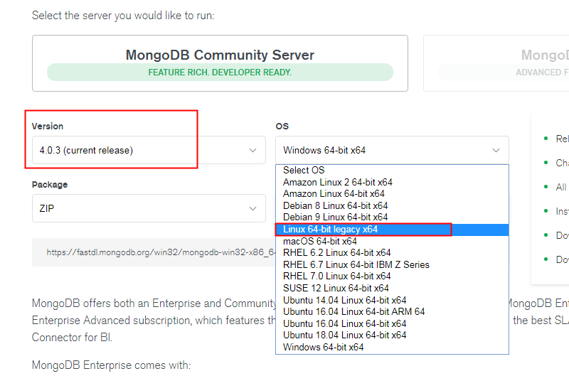
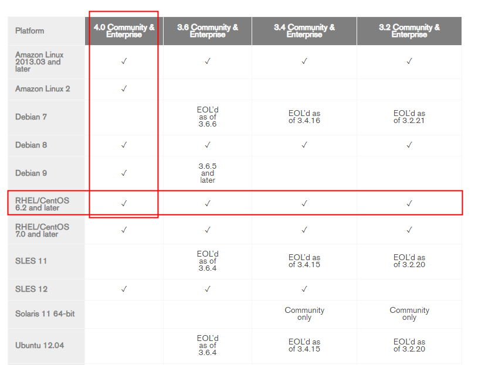
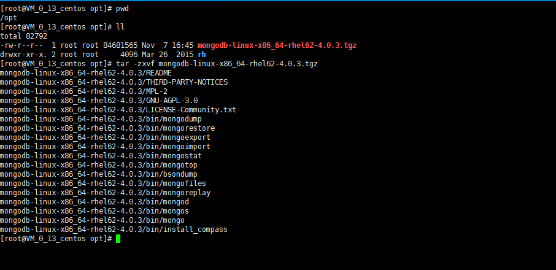
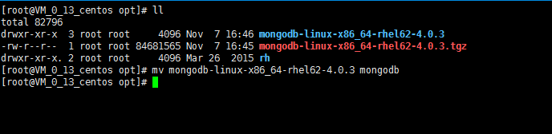
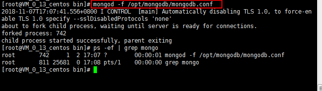

上mongodb官网https://www.mongodb.com下载二进制安装包（二进制安装包不用编译，直接运行）


将mongodb的二进制安装包上传到linux服务器的/opt目录下，并解压缩

重命名解压之后为mongodb

编写mongodb的配置文件mongodb.conf
vim /opt/mongodb/mongodb.conf
#数据库数据存放目录
dbpath=/opt/mongodb/data
#数据库日志存放目录
logpath=/opt/mongodb/logs/mongodb.log
#以追加的方式记录日志
logappend = true
#端口号 默认为27017
port=27017
#以后台方式运行进程
fork=true
#开启用户认证
auth=true
#关闭http接口，默认关闭http端口访问
#nohttpinterface=true
#mongodb所绑定的ip地址
bind_ip=0.0.0.0
#启用日志文件，默认启用
journal=true
#这个选项可以过滤掉一些无用的日志信息，若需要调试使用请设置为false
#quiet=true
#authSchemaVersion=3
编辑/etc/profile，添加mongodb的路径到系统的环境变量中
用命令：mongod -f /opt/mongodb/mongodb.conf启动mongodb服务

设置mongodb开机自动启动
未完待续。。。。
设置mongodb用户名密码
未完待续。。。。
设置mongodb远程访问
未完待续。。。。